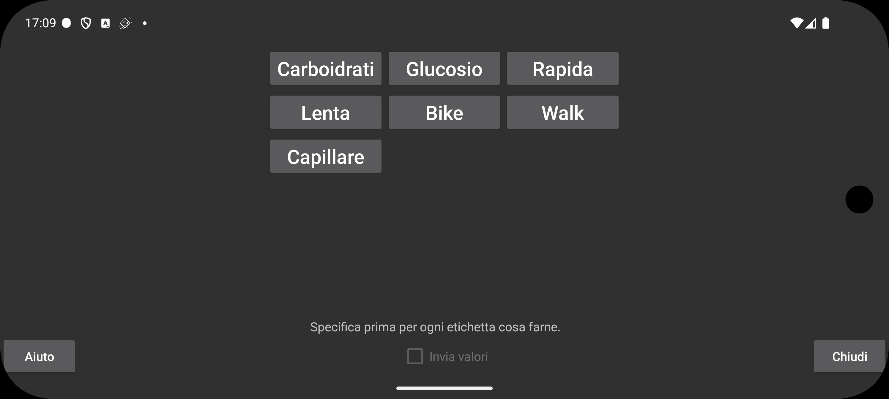

ar be de es fr hi it ja nl pl pt ru tr uk uz zh en
Imposta "Invia valori", per inviare i valori a Libreview. Prima di poter attivare "Invia valori", devi specificare per ogni etichetta come i valori inseriti sotto quell'etichetta debbano essere inviati a Libreview. Le etichette stesse possono essere create, modificate ed eliminate in Menu sinistro->Impostazione->"Etichette numeriche".
Per le etichette inviate come commenti a Libreview si applica la seguente restrizione: dopo aver modificato un'etichetta, le cancellazioni e le modifiche dei valori inseriti sotto l'etichetta precedente non saranno propagate a LibreView. Ad esempio, se prima avevi l'etichetta Bike e hai inserito 20, poi cambi Bike in Cycling e modifichi 20 in 25, questa modifica non risulterà in un cambiamento in Libreview, ma saranno presenti in Libreview sia Bike 20 che Cycling 25. L'unica cosa che puoi fare è eliminare i dispositivi attuali in Libreview e premere su Reinvia dati in Juggluco.